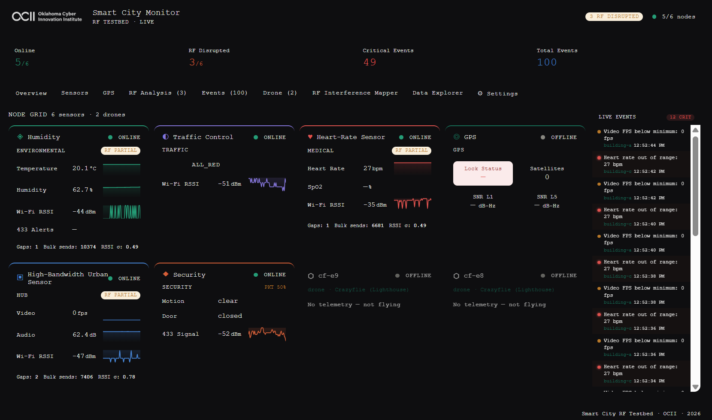
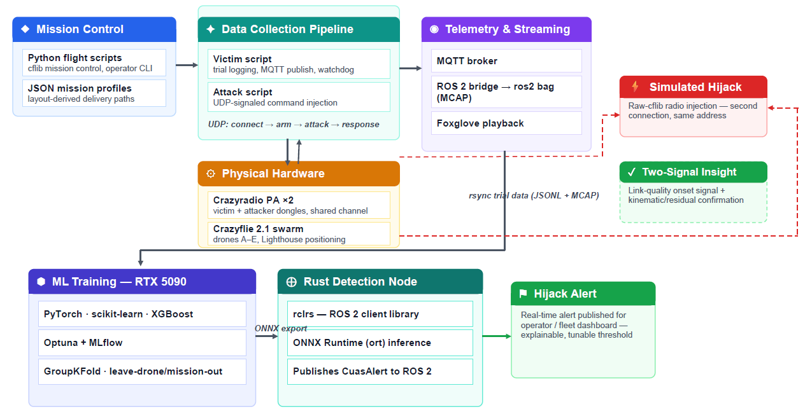
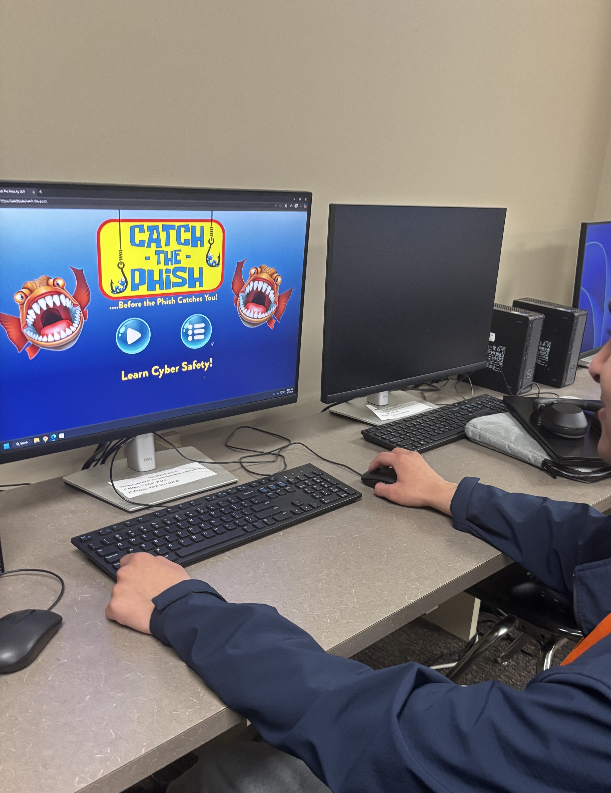
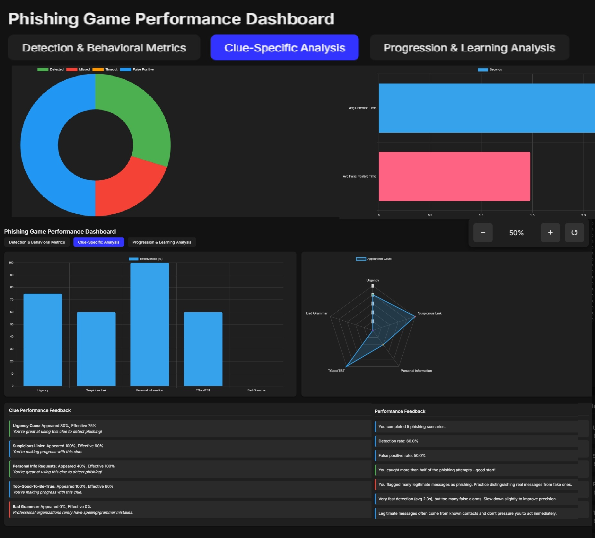

About Me
I am a software engineer and security researcher at the Oklahoma Cyber Innovation Institute (OCII), University of Tulsa, where I design, build, and evaluate real-world systems at the intersection of applied machine learning, cybersecurity, and autonomous systems. My research identified and demonstrated a security gap in how autonomous drone control protocols resolve conflicting commands, and developed a detection system to address it — published at IEEE CARS 2026.Alongside this research, I design and build the full-stack platforms, RF sensor networks, and embedded infrastructure that power the testbed — translating experimental protocols into deployable, real-world systems.
Selected Work
The projects below span systems engineering, applied security research, and real-time analytics — from the sensor network that instruments a smart-city testbed, to the vulnerability research and published detection system built on top of it, to the active work extending that research to multi-drone swarms.
Smart City Real-Time IoT Monitoring Platform
Designed and built a full-stack real-time IoT monitoring platform for smart-city cybersecurity research at OCII. The system ingests live data from distributed sensor nodes across four RF frequency bands — Wi-Fi, 433 MHz, GPS L1/L5, and LoRaWAN — and streams it to a browser-based dashboard with sub-second latency using an event-driven MQTT and Socket.io architecture. It detects and classifies RF disruption signatures in real time, distinguishing packet loss, transmission buffering, and signal degradation using a lab-calibrated jammer-to-signal interference model, and integrates live telemetry from autonomous drone missions alongside the sensor network.
- Deployed on a physical smart-city testbed as the primary research instrument for an RF interference study assessment detailed below
- React frontend with live sensor dashboards, RF disruption analysis, and drone flight-path visualization on an HTML5 canvas
- Node.js backend with MQTT ingestion, Socket.io broadcast, a REST API, and persistent SQLite storage
- Event-driven architecture processing multi-band RF sensor data across multiple physical nodes in real time
- RF jamming detection pipeline classifying disruption type, packet loss rate, and transmission-rhythm anomalies
- Drone telemetry integration with ROS 2 output and automated MCAP flight recording
Recognition: Selected to present this work at ThunderPlains 2026, Oklahoma's annual developer conference, with related research accepted at the IEEE International Conference on Cyber, Autonomous, and Robotic Systems (CARS) 2026. 🔗 ThunderPlains post

Micro Aerial Vehicle Hijacking & Swarm Security Research
OCII / OCAST — Published at IEEE CARS 2026, now extending to multi-drone swarm missions
Applied full-stack engineering and security research to autonomous drone agents, examining command-and-control behavior, safety boundaries, and recovery under adversarial conditions. This work is part of an OCAST-supported initiative led by OCII to position Tulsa as a regional hub for unmanned aerial systems and smart-city technology, and examines the risks introduced by compromised command-and-control channels as drone operations move into urban, multi-drone environments.
The project follows a complete security-research arc. I conducted an architectural analysis of a class of micro-UAV command stacks, identifying design assumptions in the Crazyflie control protocol — such as trusting client-side connection state and resolving command authority by packet arrival timing — that allow multiple radios to establish simultaneous command authority over a single drone. Building on this analysis, I implemented a modified flight commander and demonstrated a working proof-of-concept that hijacks an active flight mid-mission via high-frequency command injection. In response, I designed a real-time anomaly detector that flags kinematic deviations from expected flight behavior, and generalized the approach into a Random Forest classifier achieving an F1 score of 0.906 with a 1.18% false-positive rate — accepted as "Authority Contention in Micro-UAV Command Stacks" at IEEE CARS 2026. Each stage of this work is detailed below. (Publication detail will be linked after the conference.)
Trajectory Planning Module
Built a real-time trajectory planner using Crazyflie kinematic constraints. Computes optimal paths based on flight missions and integrates battery-aware decision making.
- Waypoint-based path computation
- Trajectory modeling and visualization
Battery Monitoring & Flight-Time Estimation
Developed a predictive battery model using thrust demand, hover power, and vertical and horizontal movement cost. Produces real-time remaining flight-time estimates during autonomous missions.
- Energy consumption modeling
- Battery-aware trajectory validation
- Live remaining flight-time estimator
Commander Hijacking Attack
Conducted an architectural analysis of the Crazyflie control protocol, identifying that it permits multiple Crazyradios to connect and establish command authority simultaneously. Built a modified MotionCommander and HighLevelCommander demonstrating that an attacker controller can override legitimate flight commands through high-frequency packet injection.
- Modified Crazyflie client to accept multiple radios
- Attacker injects rapid spoofed commands mid-flight
- Drone redirects to attacker-selected coordinates
Anomaly Detection & Telemetry Monitoring
Developed a real-time anomaly detector comparing actual telemetry against expected trajectories. Flags deviations created by hijacking events and produces logs for post-flight analysis.
- Deviation thresholds based on kinematic expectations
- System failure and data loss detection
- Live telemetry comparison
Next Phase: Multi-Drone Swarm Generalization

The next phase extends this research to multi-drone swarm delivery missions, generalizing detection across new drones, new delivery paths, and new drone pairings — not just held-out samples. Mid-project trial data surfaced a finding that reshaped the detection design: the attacker's radio connecting to the target — before any command is sent — is itself measurably detectable, seconds ahead of any kinematic deviation. That led to a two-signal architecture: an early link-quality/radio-presence signal, confirmed by a kinematic and trajectory-residual signal once takeover commands begin. It's being built on a stack chosen deliberately for production relevance:
- Data Collection Pipeline — Python/cflib mission control and attack simulation, MQTT telemetry publish, JSON-based mission profiles generated from a city layout config
- ROS 2 & Telemetry — multi-drone bridge, MCAP-format flight recording via ros2 bag, Foxglove-based visualization and analysis
- Applied ML — Python, scikit-learn, XGBoost, and PyTorch with CUDA-accelerated training; Optuna for hyperparameter search and MLflow for experiment tracking; Random Forest, XGBoost, and sequence-model architectures compared against the published detection baseline via leave-one-drone-out and leave-one-mission-out validation
- Rust Detection Node — real-time, memory-safe inference via rclrs and ONNX Runtime, publishing alerts back onto the ROS 2 graph
- Dedicated ML workstation — AMD Threadripper PRO 7975WX, 256GB RAM, RTX 5090 (32GB), Ubuntu 24.04
Status: active data collection and pipeline development, building directly on the published CARS 2026 results above.
Phishing Detection Game (Godot Arcade + Web Analytics Platform)
Beyond security research, I build software that ships and gets used. This Godot-based educational arcade game teaches phishing detection to middle and high school students, exportable to desktop and HTML5, with a custom real-time analytics system built in Node.js, Express, and MongoDB. Gameplay events stream to a live dashboard measuring learning outcomes, difficulty progression, and performance trends. Developed as part of a state-level cybersecurity education initiative supported by OCII and aligned with OCAST innovation goals, the game has been showcased at the Oklahoma Summit and the OKC Innovation event, and deployed in Oklahoma classrooms as part of OCII's cybersecurity curriculum.


Game Design & Implementation
The game is built in Godot and designed for both arcade cabinet deployment and standard desktop browsers. It scales difficulty based on the player's accuracy and reaction time while introducing increasingly sophisticated phishing patterns, domain spoofing cues, and timing pressure.
- Godot 4.x engine
- Dynamic difficulty adjustment
- Phishing pattern generation system
- Both desktop and HTML5 export supported
Real-Time Analytics Architecture
The HTML5-exported Godot build communicates directly with a backend analytics service running on an Ubuntu server. All gameplay events — choices, mistakes, response times, difficulty transitions, session data — are logged in real time and can be inspected through a dashboard.
Client-to-Server Event Streaming
- Godot Web export uses a JavaScript bridge for HTTP requests
- Events POSTed to an Express API
- Stored in MongoDB for aggregation, dashboards, and long-term studies
Server Stack
- Node.js v24.9.0
- Express.js API server
- MongoDB with indexed event collections
- Ubuntu cloud server (self-hosted)
Analytics Dashboard
- Web-based dashboard built with vanilla HTML, JS, and REST
- Tracks accuracy, response time, phishing detection type, and level progression
- Real-time charts for educators and researchers
- Supports classroom monitoring and long-term analytics
System Architecture Overview
Godot Game → HTML5 Export (runs inside browser)
Analytics JS Module embedded inside the exported HTML
Node.js/Express Backend hosted on Ubuntu
MongoDB Database storing gameplay events
Web Dashboard reading aggregated metrics
Workflow
- Player interacts with the Godot game inside the browser.
- Game sends JSON events to an Express endpoint.
- Server validates and stores events in MongoDB.
- Dashboard queries the analytics API and visualizes the data.
This setup is designed to later support multiplayer, leaderboards, ML-based difficulty tuning, or classroom-wide telemetry.
Planned Extensions
- Adaptive ML-based difficulty prediction
- Teacher dashboard with student-by-student progress
- Expanded phishing dataset with generative phishing examples
- Integration with smart-city and IoT education modules